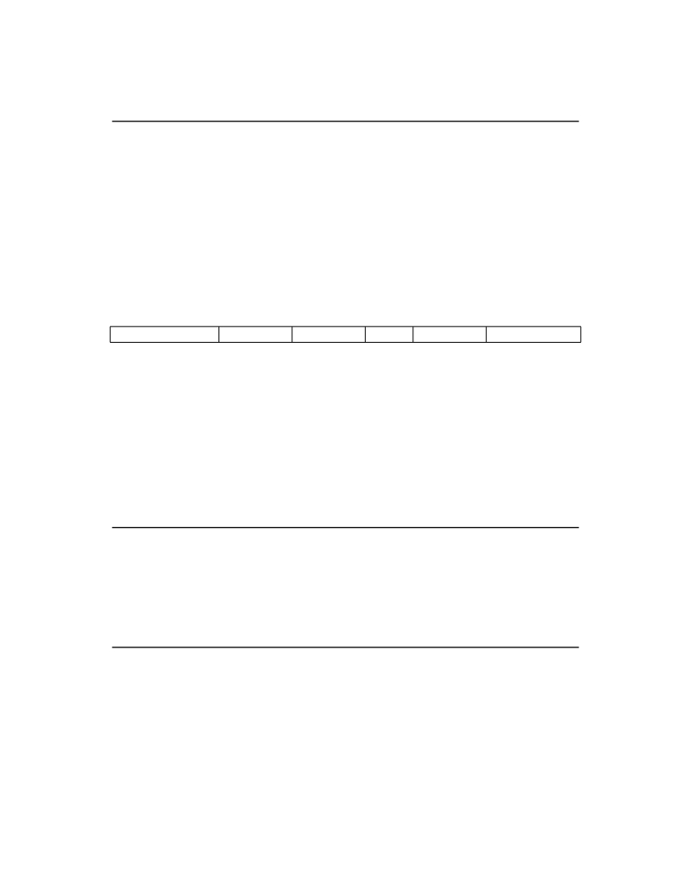

<table border="0" height="1453" width="1123">
<tr><td>
<div style="position:absolute; top:0; left:0;"></div>
<div style="position:absolute;top:74.119;left:132.145;"><nobr>
<span style="font-size:20.022;font-style:italic;">Volume II: RISC-V Privileged Architectures V20190608-Priv-MSU-Ratified</span>
</nobr></div>
<div style="position:absolute;top:74.119;left:971.067;"><nobr>
<span style="font-size:20.022;">65</span>
</nobr></div>
<div style="position:absolute;top:130.572;left:132.145;"><nobr>
<span style="font-size:20.022;">ASID is reused, it may be necessary to execute an SFENCE.VMA instruction (see Section</span>
<span style="font-size:20.022;color: #000080;"><a href="#" onClick="javascript:parent.GotoNewPage(76); return false">4.2.1</a></span>
<span style="font-size:20.022;">)</span>
</nobr></div>
<div style="position:absolute;top:155.440;left:132.145;"><nobr>
<span style="font-size:20.022;">after writing satp .</span>
</nobr></div>
<div style="position:absolute;top:207.060;left:182.201;"><nobr>
<span style="font-size:18.285;font-style:italic;">Not imposing upon implementations to flush address-translation caches upon</span>
<span style="font-size:18.285;">satp</span>
<span style="font-size:18.285;font-style:italic;">writes reduces</span>
</nobr></div>
<div style="position:absolute;top:229.002;left:182.201;"><nobr>
<span style="font-size:18.285;font-style:italic;">the cost of context switches, provided a sufficiently large ASID space.</span>
</nobr></div>
<div style="position:absolute;top:291.892;left:132.145;"><nobr>
<span style="font-size:26.330;font-weight:bold;">4.2</span>
</nobr></div>
<div style="position:absolute;top:291.892;left:199.577;"><nobr>
<span style="font-size:26.330;font-weight:bold;">Supervisor Instructions</span>
</nobr></div>
<div style="position:absolute;top:359.250;left:132.145;"><nobr>
<span style="font-size:20.022;">In addition to the SRET instruction defined in Section</span>
<span style="font-size:20.022;color: #000080;"><a href="#" onClick="javascript:parent.GotoNewPage(51); return false">3.2.2</a></span>
<span style="font-size:20.022;">, one new supervisor-level instruction</span>
</nobr></div>
<div style="position:absolute;top:384.117;left:132.145;"><nobr>
<span style="font-size:20.022;">is provided.</span>
</nobr></div>
<div style="position:absolute;top:453.543;left:132.145;"><nobr>
<span style="font-size:21.942;font-weight:bold;">4.2.1</span>
</nobr></div>
<div style="position:absolute;top:453.543;left:207.516;"><nobr>
<span style="font-size:21.942;font-weight:bold;">Supervisor Memory-Management Fence Instruction</span>
</nobr></div>
<div style="position:absolute;top:511.776;left:196.419;"><nobr>
<span style="font-size:14.628;">31</span>
</nobr></div>
<div style="position:absolute;top:511.776;left:340.694;"><nobr>
<span style="font-size:14.628;">25 24</span>
</nobr></div>
<div style="position:absolute;top:511.776;left:459.605;"><nobr>
<span style="font-size:14.628;">20 19</span>
</nobr></div>
<div style="position:absolute;top:511.776;left:578.515;"><nobr>
<span style="font-size:14.628;">15 14</span>
</nobr></div>
<div style="position:absolute;top:511.776;left:649.856;"><nobr>
<span style="font-size:14.628;">12 11</span>
</nobr></div>
<div style="position:absolute;top:511.776;left:782.926;"><nobr>
<span style="font-size:14.628;">7 6</span>
</nobr></div>
<div style="position:absolute;top:511.776;left:925.621;"><nobr>
<span style="font-size:14.628;">0</span>
</nobr></div>
<div style="position:absolute;top:533.632;left:239.981;"><nobr>
<span style="font-size:20.022;">funct7</span>
</nobr></div>
<div style="position:absolute;top:559.231;left:267.990;"><nobr>
<span style="font-size:20.022;">7</span>
</nobr></div>
<div style="position:absolute;top:584.099;left:205.561;"><nobr>
<span style="font-size:20.022;">SFENCE.VMA</span>
</nobr></div>
<div style="position:absolute;top:533.632;left:402.472;"><nobr>
<span style="font-size:20.022;">rs2</span>
</nobr></div>
<div style="position:absolute;top:559.231;left:410.707;"><nobr>
<span style="font-size:20.022;">5</span>
</nobr></div>
<div style="position:absolute;top:584.099;left:398.333;"><nobr>
<span style="font-size:20.022;">asid</span>
</nobr></div>
<div style="position:absolute;top:533.632;left:521.401;"><nobr>
<span style="font-size:20.022;">rs1</span>
</nobr></div>
<div style="position:absolute;top:559.231;left:529.638;"><nobr>
<span style="font-size:20.022;">5</span>
</nobr></div>
<div style="position:absolute;top:584.099;left:509.736;"><nobr>
<span style="font-size:20.022;">vaddr</span>
</nobr></div>
<div style="position:absolute;top:533.632;left:605.078;"><nobr>
<span style="font-size:20.022;">funct3</span>
</nobr></div>
<div style="position:absolute;top:559.231;left:624.783;"><nobr>
<span style="font-size:20.022;">3</span>
</nobr></div>
<div style="position:absolute;top:584.099;left:604.299;"><nobr>
<span style="font-size:20.022;">PRIV</span>
</nobr></div>
<div style="position:absolute;top:533.632;left:721.458;"><nobr>
<span style="font-size:20.022;">rd</span>
</nobr></div>
<div style="position:absolute;top:559.231;left:726.294;"><nobr>
<span style="font-size:20.022;">5</span>
</nobr></div>
<div style="position:absolute;top:584.099;left:726.113;"><nobr>
<span style="font-size:20.022;">0</span>
</nobr></div>
<div style="position:absolute;top:533.632;left:836.661;"><nobr>
<span style="font-size:20.022;">opcode</span>
</nobr></div>
<div style="position:absolute;top:559.231;left:857.118;"><nobr>
<span style="font-size:20.022;">7</span>
</nobr></div>
<div style="position:absolute;top:584.099;left:820.097;"><nobr>
<span style="font-size:20.022;">SYSTEM</span>
</nobr></div>
<div style="position:absolute;top:640.251;left:132.145;"><nobr>
<span style="font-size:20.022;">The supervisor memory-management fence instruction SFENCE.VMA is used to synchronize up-</span>
</nobr></div>
<div style="position:absolute;top:665.118;left:132.145;"><nobr>
<span style="font-size:20.022;">dates to in-memory memory-management data structures with current execution. Instruction exe-</span>
</nobr></div>
<div style="position:absolute;top:689.985;left:132.145;"><nobr>
<span style="font-size:20.022;">cution causes implicit reads and writes to these data structures; however, these implicit references</span>
</nobr></div>
<div style="position:absolute;top:714.853;left:132.145;"><nobr>
<span style="font-size:20.022;">are ordinarily not ordered with respect to explicit loads and stores. Executing an SFENCE.VMA</span>
</nobr></div>
<div style="position:absolute;top:739.722;left:132.145;"><nobr>
<span style="font-size:20.022;">instruction guarantees that any previous stores already visible to the current RISC-V hart are</span>
</nobr></div>
<div style="position:absolute;top:764.589;left:132.145;"><nobr>
<span style="font-size:20.022;">ordered before all subsequent implicit references from that hart to the memory-management data</span>
</nobr></div>
<div style="position:absolute;top:789.456;left:132.145;"><nobr>
<span style="font-size:20.022;">structures. Further details on the behavior of this instruction are described in Section</span>
<span style="font-size:20.022;color: #000080;"><a href="#" onClick="javascript:parent.GotoNewPage(34); return false">3.1.6.4</a></span>
<span style="font-size:20.022;">and</span>
</nobr></div>
<div style="position:absolute;top:814.323;left:132.145;"><nobr>
<span style="font-size:20.022;">Section</span>
<span style="font-size:20.022;color: #000080;"><a href="#" onClick="javascript:parent.GotoNewPage(63); return false">3.6.2</a></span>
<span style="font-size:20.022;">.</span>
</nobr></div>
<div style="position:absolute;top:865.944;left:182.201;"><nobr>
<span style="font-size:18.285;font-style:italic;">The SFENCE.VMA is used to flush any local hardware caches related to address translation.</span>
</nobr></div>
<div style="position:absolute;top:887.885;left:182.201;"><nobr>
<span style="font-size:18.285;font-style:italic;">It is specified as a fence rather than a TLB flush to provide cleaner semantics with respect to</span>
</nobr></div>
<div style="position:absolute;top:909.827;left:182.201;"><nobr>
<span style="font-size:18.285;font-style:italic;">which instructions are affected by the flush operation and to support a wider variety of dynamic</span>
</nobr></div>
<div style="position:absolute;top:931.770;left:182.201;"><nobr>
<span style="font-size:18.285;font-style:italic;">caching structures and memory-management schemes. SFENCE.VMA is also used by higher</span>
</nobr></div>
<div style="position:absolute;top:953.712;left:182.201;"><nobr>
<span style="font-size:18.285;font-style:italic;">privilege levels to synchronize page table writes and the address translation hardware.</span>
</nobr></div>
<div style="position:absolute;top:983.904;left:132.145;"><nobr>
<span style="font-size:20.022;">SFENCE.VMA orders only the local hart’s implicit references to the memory-management data</span>
</nobr></div>
<div style="position:absolute;top:1008.773;left:132.145;"><nobr>
<span style="font-size:20.022;">structures.</span>
</nobr></div>
<div style="position:absolute;top:1060.392;left:182.201;"><nobr>
<span style="font-size:18.285;font-style:italic;">Consequently, other harts must be notified separately when the memory-management data struc-</span>
</nobr></div>
<div style="position:absolute;top:1082.335;left:182.201;"><nobr>
<span style="font-size:18.285;font-style:italic;">tures have been modified. One approach is to use 1) a local data fence to ensure local writes</span>
</nobr></div>
<div style="position:absolute;top:1104.277;left:182.201;"><nobr>
<span style="font-size:18.285;font-style:italic;">are visible globally, then 2) an interprocessor interrupt to the other thread, then 3) a local</span>
</nobr></div>
<div style="position:absolute;top:1126.218;left:182.201;"><nobr>
<span style="font-size:18.285;font-style:italic;">SFENCE.VMA in the interrupt handler of the remote thread, and finally 4) signal back to orig-</span>
</nobr></div>
<div style="position:absolute;top:1148.160;left:182.201;"><nobr>
<span style="font-size:18.285;font-style:italic;">inating thread that operation is complete. This is, of course, the RISC-V analog to a TLB</span>
</nobr></div>
<div style="position:absolute;top:1170.102;left:182.201;"><nobr>
<span style="font-size:18.285;font-style:italic;">shootdown.</span>
</nobr></div>
<div style="position:absolute;top:1200.295;left:132.145;"><nobr>
<span style="font-size:20.022;">For the common case that the translation data structures have only been modified for a single</span>
</nobr></div>
<div style="position:absolute;top:1225.162;left:132.145;"><nobr>
<span style="font-size:20.022;">address mapping (i.e., one page or superpage),</span>
<span style="font-size:20.022;font-style:italic;">rs1</span>
<span style="font-size:20.022;">can specify a virtual address within that mapping</span>
</nobr></div>
<div style="position:absolute;top:1250.030;left:132.145;"><nobr>
<span style="font-size:20.022;">to effect a translation fence for that mapping only. Furthermore, for the common case that the</span>
</nobr></div>
<div style="position:absolute;top:1274.899;left:132.145;"><nobr>
<span style="font-size:20.022;">translation data structures have only been modified for a single address-space identifier,</span>
<span style="font-size:20.022;font-style:italic;">rs2</span>
<span style="font-size:20.022;">can</span>
</nobr></div>
<div style="position:absolute;top:1299.766;left:132.145;"><nobr>
<span style="font-size:20.022;">specify the address space. The behavior of SFENCE.VMA depends on</span>
<span style="font-size:20.022;font-style:italic;">rs1</span>
<span style="font-size:20.022;">and</span>
<span style="font-size:20.022;font-style:italic;">rs2</span>
<span style="font-size:20.022;">as follows:</span>
</nobr></div>
</td></tr>
</table>
